ADAT
Современный lifestyle-бренд, объединяющий в себе современную эстетику и наследие Кавказа.
В экосистему проекта входят экспедиции по высокогорным регионам, сбор трав для чая и проведение чайных ритуалов во время походов.
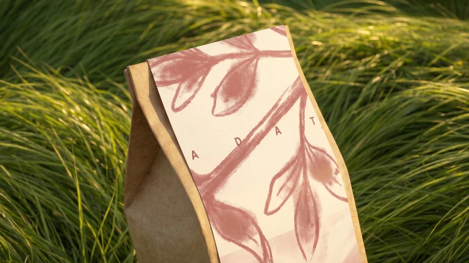
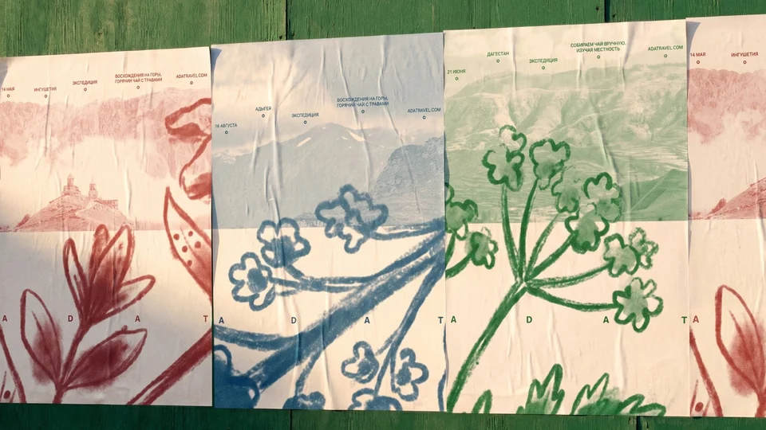
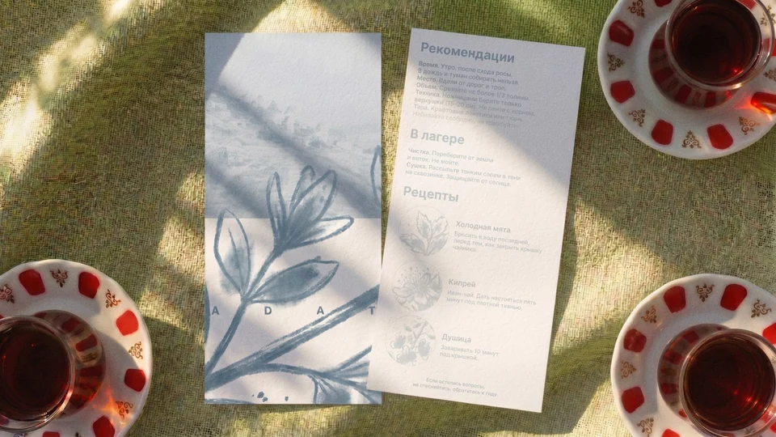
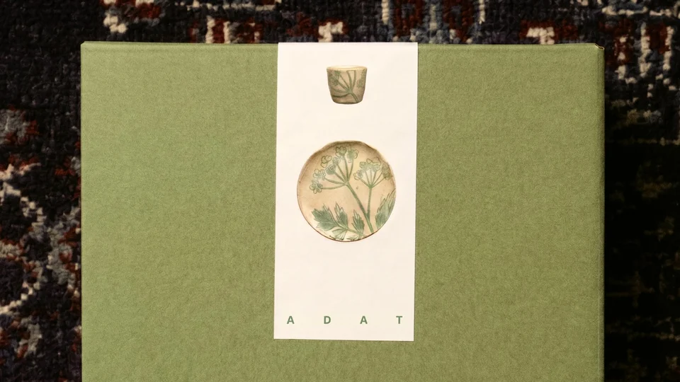
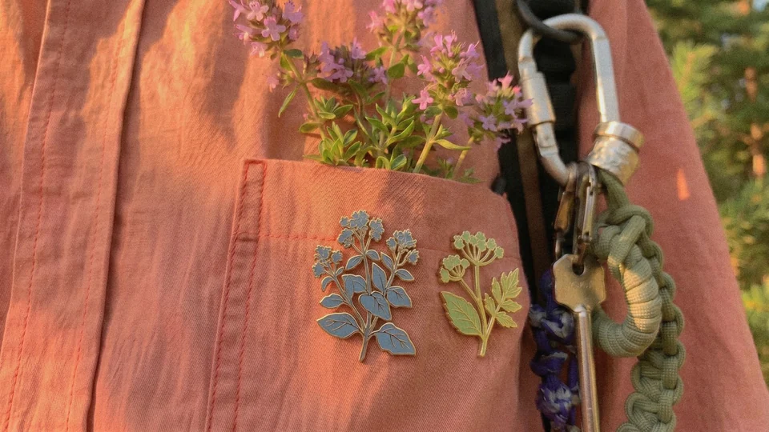
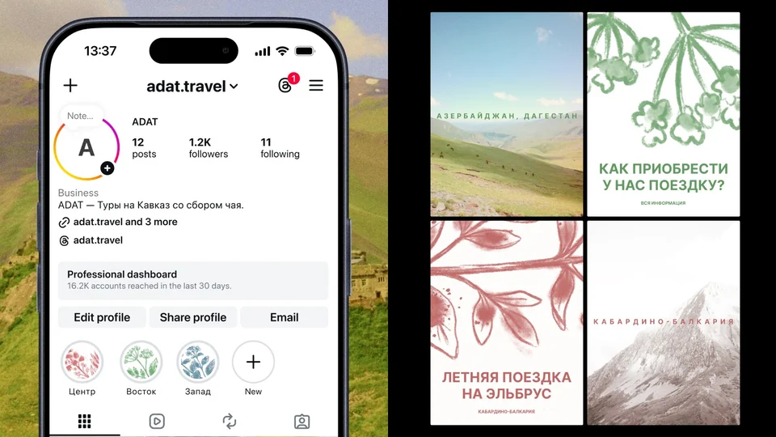
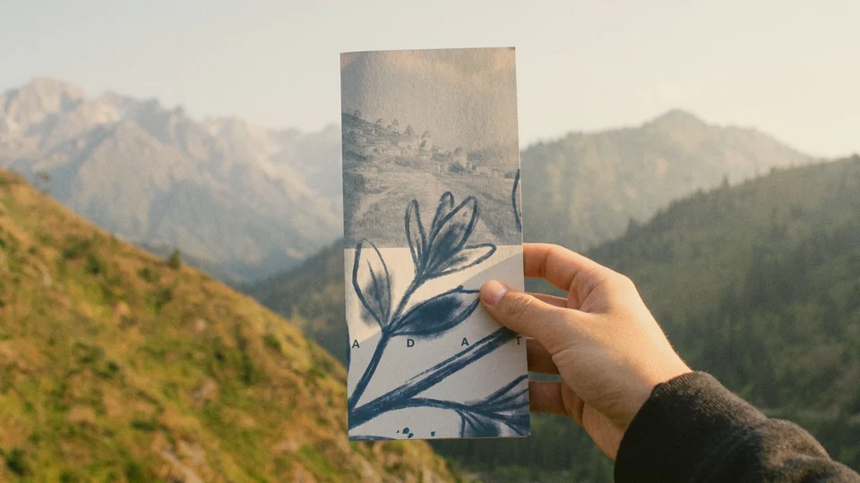
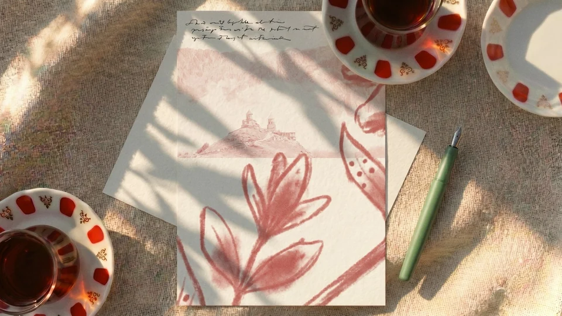
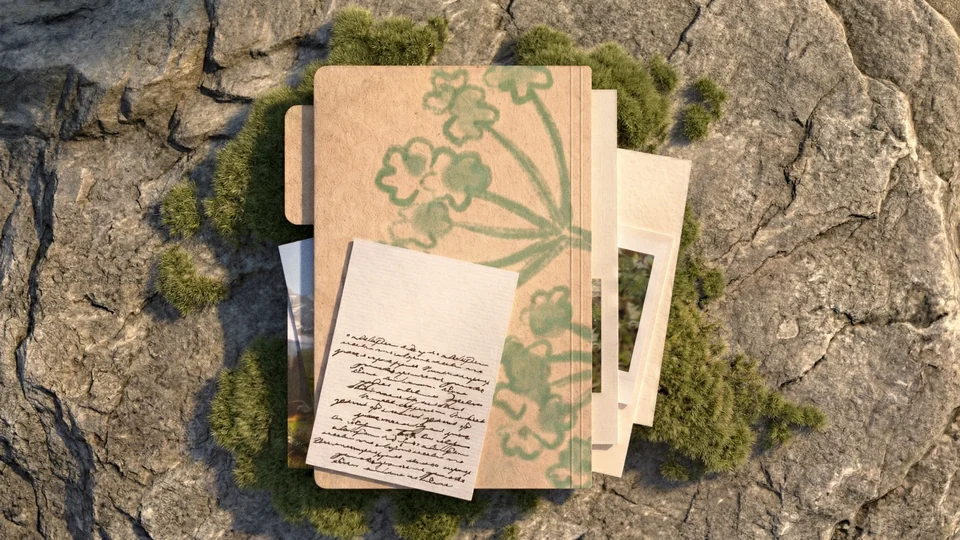
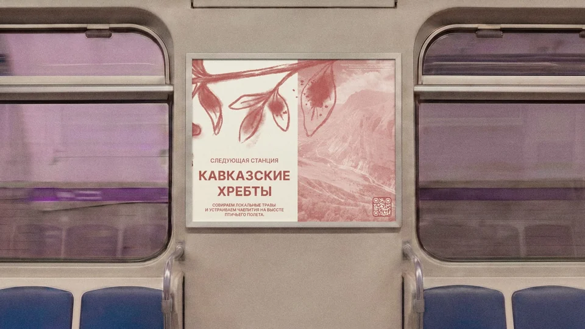
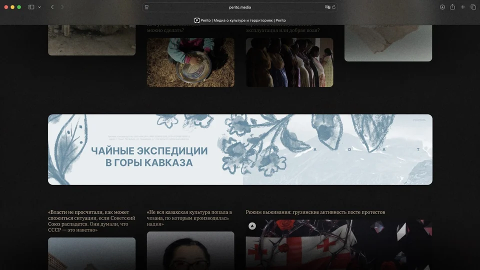
Веб-сайт
Включает в себя возможность бронировать поездки, изучать опыт прошлых пользователей.